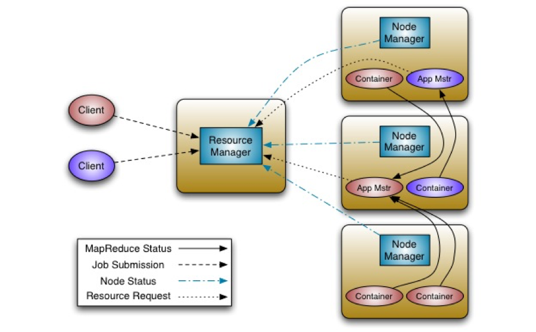

Yarn Structure
Posted on 04/26/2015 to Blog | Tags: hadoop , Yarn
This post explains Yarn structure and its application executation sequence.
Yarn Components
Resource Manager(RM)
- Master in master-slave pattern.
- Handles an overall resource profile for each application.
- Allocates resources to the various running applications subject to familiar constraints of capacities, queues.
- Scheduling based on the resource requirements of an application by using the abstract notion of a resource Container, which incorporates resource dimensions such as memory, CPU, disk, network, etc.
- Requests resources back from a running application. This situation typically happens when cluster resources become scarce and the scheduler decides to revoke some (but not all) of the resources that were given to an application.
Node Manager(NM)
- Slave in master-slave pattern, one node manager per machine
- Launching the applications’ Containers, monitoring their resource usage (CPU, memory, disk, network) and node health, and reporting this information to the Resource Manager.
- Managing logs and other auxiliary services that can be utilized by YARN applications.

Application Master(Appmaster)
- One application master per application.
- A process that coordinates the execution of an application in the cluster
- Negotiating resources(containers) from the Resource Manager and working with the Node Managers to track and monitor their progress
Container
- A Container represents a collection of physical resource (memory, CPU) on a single node in a given cluster.
- A Container is supervised by the Node Manager and scheduled by the Resource Manager.
- There can be multiple Containers on a single Node (or a single large one). Every node in the system is considered to be composed of multiple Containers of minimum memory size (512MB or 1 GB, for example). The Application Master can request any Container as a multiple of the minimum memory size.
Application execution sequence
Resource Manager and Node Managers are already running before computation. Node Manager registers with the Resource Manager once started, and then sends heartbeats with its status and waits for instructions.
- A client program submits the application, including the necessary specifications to launch the application-specific Application Master.
- The Resource Manager assumes responsibility for negotiating a specified Container in which to start the Application Master, and then launches the Application Master.
- On boot-up, the Application Master registers with the Resource Manager. The registration allows the client program to query the Resource Manager for details, which allows it to directly communicate with its own Application Master.
- During normal operation, the Application Master negotiates appropriate resource Containers via the resource-request protocol.
- Upon successful Container allocations, the Application Master launches the Container by providing the Container launch specification to the Node Manager. The launch specification typically includes the necessary information to allow the Container to communicate with the Application Master.
- The application code executing within the Container then provides necessary information (progress, status etc.) to its Application Master via an application-specific protocol.
- During the application execution, the client that submitted the program communicates directly with the Application Master to get status, progress updates, etc. via an application-specific protocol.
- Once the application is complete, the Application Master de-registers with the Resource Manager and shuts down, allowing its own Container to be repurposed.
How do AppMaster and Container negotiate?
Once started, Application Master periodically send heartbeats to the Resource Manager to affirm its health and update the record of its resource demands. After building a model of its requirements, the Application Master encodes its preferences and constraints in a heartbeat message to the Resource Manager. In response to subsequent heartbeats, the Application Master will receive a lease on Containers bound to an allocation of resources at a particular node in the cluster. Depending on the Containers it receives from the Resource Manager, the Application Master may update its execution plan to accommodate the excess or lack of resources. Container allocation/de-allocation can take place in a dynamic fashion as the application progresses.
Container requests (and releases) can take place in a dynamic manner at run-time. For instance, a MapReduce job may request a certain amount of mapper Containers, and as they finish, release them and request that more reducer containers be started.
How does node manager initialize container?
After validating the authenticity of the Container lease, the Node Manager configures the environment for the Container, including initializing its monitoring subsystem with the resource constraints specified by the application. The Node Manager will also kill Containers as directed by the Resource Manager.